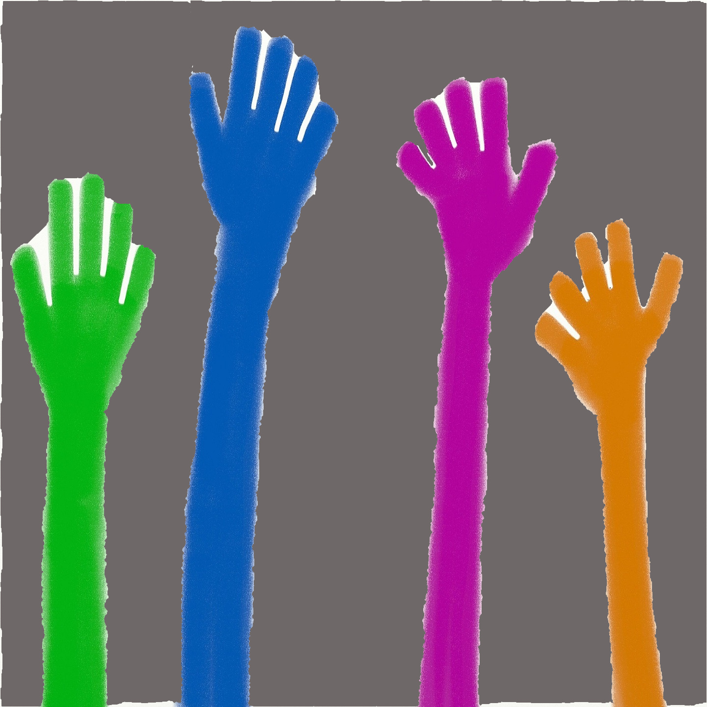
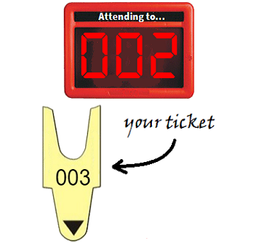

<!-- <ion-header>
  <ion-toolbar>
    <ion-title>
      TeacherMatic
    </ion-title>
  </ion-toolbar>
</ion-header> -->

<ion-content padding="true">

  <!-- <ion-radio-group allow-empty-selection="true" name="radio-group" (ionChange)="radioGroupChange($event)">
    <ion-list lines="none">
      <ion-list-header>
        <ion-label>In this classroom you're a...</ion-label>
      </ion-list-header>

      <ion-item *ngFor="let item of radio_list_roles" (ionFocus)="radioFocus()" (ionSelect)="radioSelect($event)"
        (ionBlur)="radioBlur()">

        <ion-label>{{item.text}}</ion-label>
        <ion-radio slot="start" name="{{item.name}}" value="{{item.value}}" checked="{{item.checked}}"
          color="{{item.color}}" disabled="{{item.disabled}}"></ion-radio>
      </ion-item>
    </ion-list>
  </ion-radio-group> -->

  <!-- <div class="my-button" (click)="goNext()">
    <ion-button color="primary" expand="block">
      Next &gt;&gt;
    </ion-button>
  </div> -->


  <!-- <p *ngIf="selectedRadioGroup"><b>Radio Group Event</b><br />
    {{selectedRadioGroup.value}}</p>
  <p><b>Radio Item Event</b><br />
    {{selectedRadioItem | json}}</p> -->

<div class="todo">
  <ion-slides pager="true" [options]="slideOpts">
    <ion-slide>
      <ion-grid>
        <ion-row>
            <!-- Photo by Alvaro Reyes on Unsplash -->
          <!-- Photo by Mimi Thian on Unsplash -->
          
        </ion-row>
        <ion-row>
          <ion-note>In an ICT classroom students need the constant help of their teacher.</ion-note>
        </ion-row>
      </ion-grid>
    </ion-slide>
    <ion-slide>
      <ion-grid>
        <ion-row>
          <!-- Image by <a href="https://pixabay.com/users/Kaz-19203/?utm_source=link-attribution&amp;utm_medium=referral&amp;utm_campaign=image&amp;utm_content=1768845">Karen Arnold</a> from <a href="https://pixabay.com/?utm_source=link-attribution&amp;utm_medium=referral&amp;utm_campaign=image&amp;utm_content=1768845">Pixabay</a> -->
          <!-- Image by <a href="https://pixabay.com/users/Prawny-162579/?utm_source=link-attribution&amp;utm_medium=referral&amp;utm_campaign=image&amp;utm_content=1234037">Prawny</a> from <a href="https://pixabay.com/?utm_source=link-attribution&amp;utm_medium=referral&amp;utm_campaign=image&amp;utm_content=1234037">Pixabay</a> -->
          <!-- Image by <a href="https://pixabay.com/users/stymeist-2060928/?utm_source=link-attribution&amp;utm_medium=referral&amp;utm_campaign=image&amp;utm_content=1202488">stymeist</a> from <a href="https://pixabay.com/?utm_source=link-attribution&amp;utm_medium=referral&amp;utm_campaign=image&amp;utm_content=1202488">Pixabay</a> -->
          
        </ion-row>
        <ion-row>
          <ion-note>Traditionally students raise their hands to get help from their teacher</ion-note>
        </ion-row>
      </ion-grid>
    </ion-slide>
    <ion-slide>
      <ion-grid>
        <ion-row>
          
        </ion-row>
        <ion-row>
          <ion-note>This app improves the process through a system similar to the ticket machine</ion-note>
        </ion-row>
      </ion-grid>
    </ion-slide>
  </ion-slides>

  <p id="in-this-classroom">In this classroom...</p>

  <ion-grid>
    <ion-row justify-content-center>
      <ion-button color="primary" expand="block" fill="outline" routerLink="/classroom/teacher">
        I'm a Teacher
      </ion-button>
    </ion-row>
    <ion-row justify-content-center>
      <ion-button color="primary" expand="block" fill="outline" routerLink="/classroom/student">
        I'm a Student
      </ion-button>
    </ion-row>
  </ion-grid>
</div>
</ion-content>